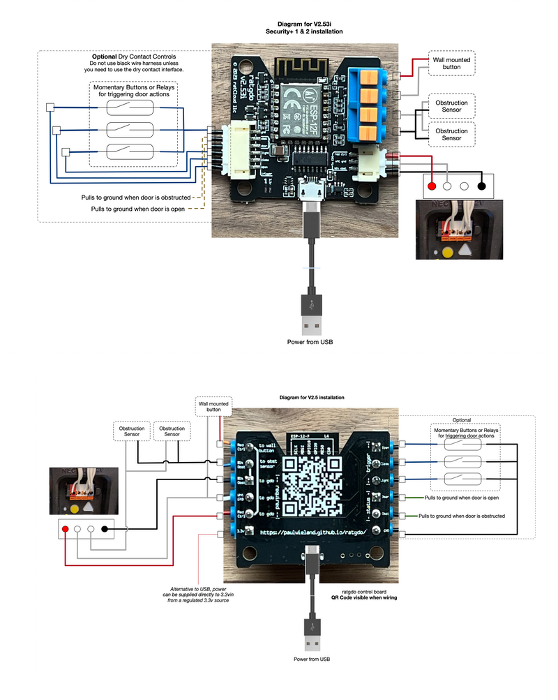

ESPHome ratgdo
In order to install the firmware, first pick your door opener control protocol, then pick your ratgdo control board version. No programming or other software required.
Choose your GDO Control Protocol:
Choose your ratgdo control board:
Wiring Diagram
Documentation
Drivers
If you can't connect to your ratgdo board make sure you have the right driver installed for the type of board you have.
- ratgdo32 disco uses a CH9102 USB to Serial chipset. [driver download]
- ratgdo v2.5i uses a CH340 USB to Serial chipset. [driver download]
Watch the v2.5i driver and firmware installation [video on YouTube].
Advanced Users
- The device is adoptable in the ESPHome dashboard
- The YAML configuration for additional boards and chips is available on GitHub